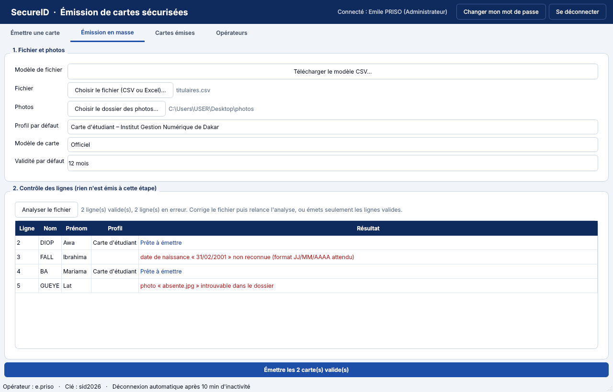

Émission de cartes sécurisées
Vos cartes étudiantes ou badges employés sont signés numériquement au moment de l'émission. Une seule carte en quelques secondes, ou une promotion entière depuis un fichier Excel.
Inclus
- Aperçu en direct du recto et du verso
- Émission en masse avec contrôle ligne par ligne et rapport
- Planches A4 recto-verso de dix cartes avec traits de coupe
- Modèle Officiel avec guilloches, micro-texte et image fantôme
